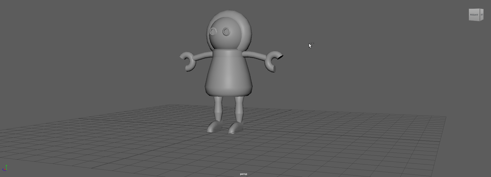
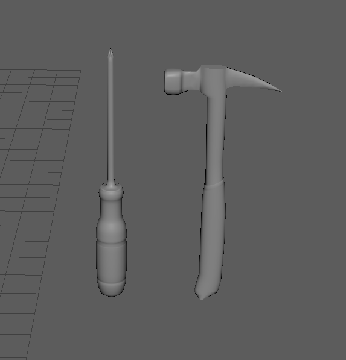
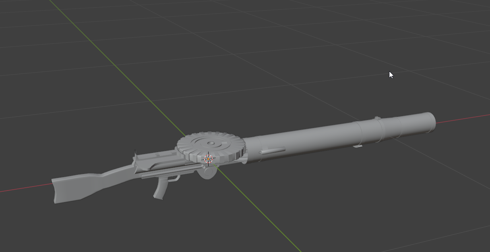
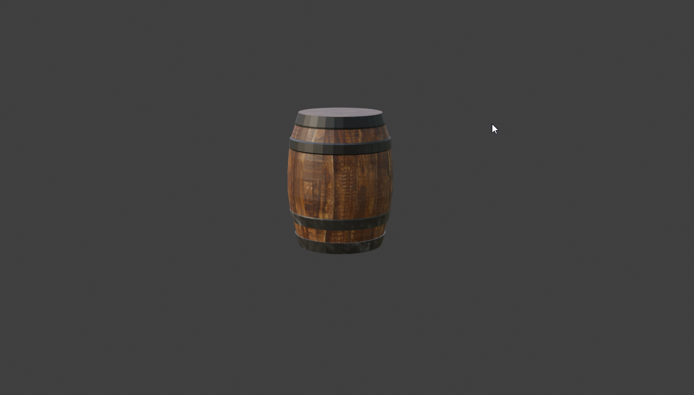
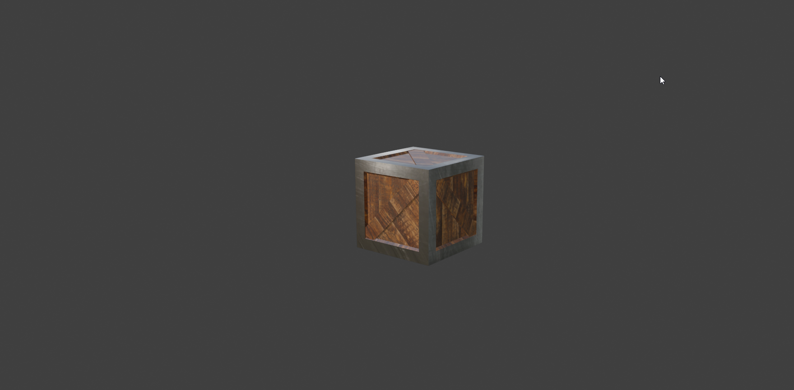

3D Character Model
Clean topology and mesh structure for organic character design.

3D Robot
Hard surface blocking and mechanical proportions study.

3D Tool Model
Hard-surface modeling of hand tools showcasing precise edge flow and proportions.

3D Complex Weapon Design
Detailed mechanical hard-surface modeling featuring intricate assemblies and drum magazine layout.

3D Environment Model
Modular corridor and floor tile components designed for game environments.


3D Textured Props
PBR textured game assets featuring worn wood and metallic banding details.
3D Animation (Ball Bounce)
Weight, spacing, and squash-and-stretch principles applied to a checker-textured sphere.
3D Animation (Cycle)
Character locomotion cycle focusing on weight shifting, timing, and dynamic movement.
3D Rig
Custom skeletal armature and weight painting setup.
3D Camera Shots
Cinematic layout, framing, and camera sequencing demonstration.